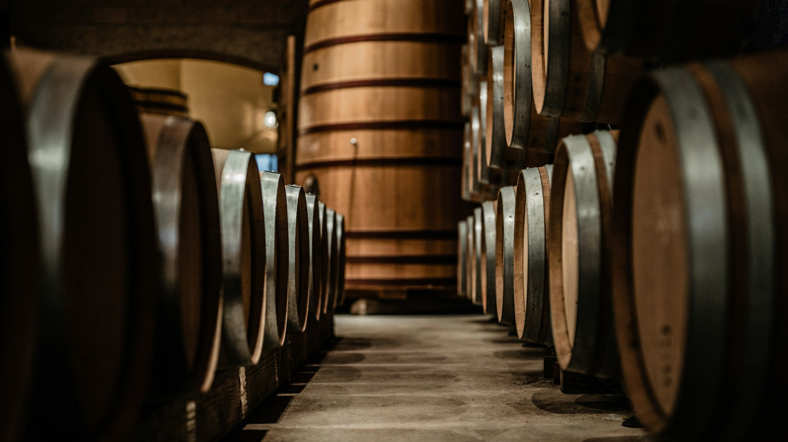
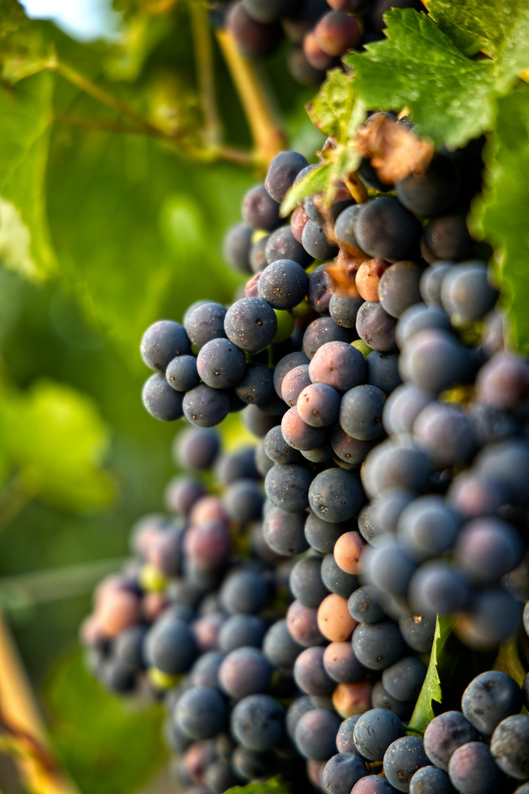
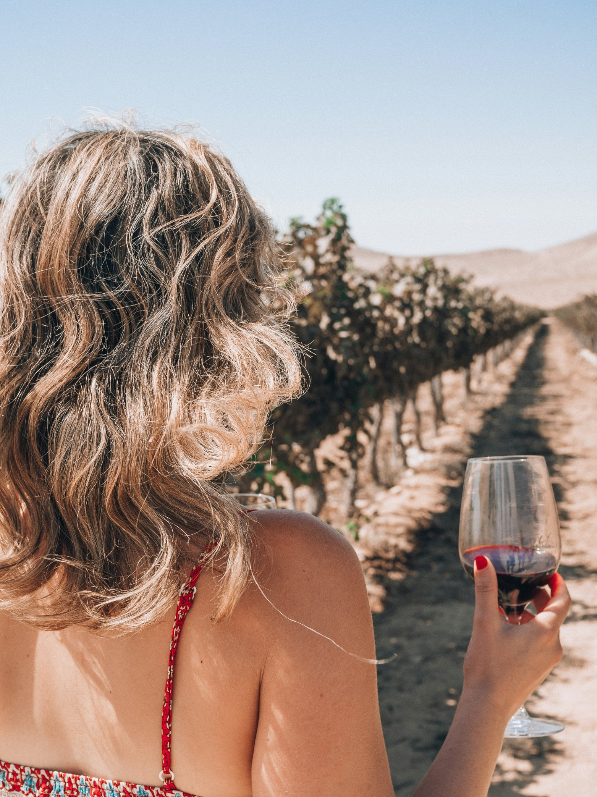
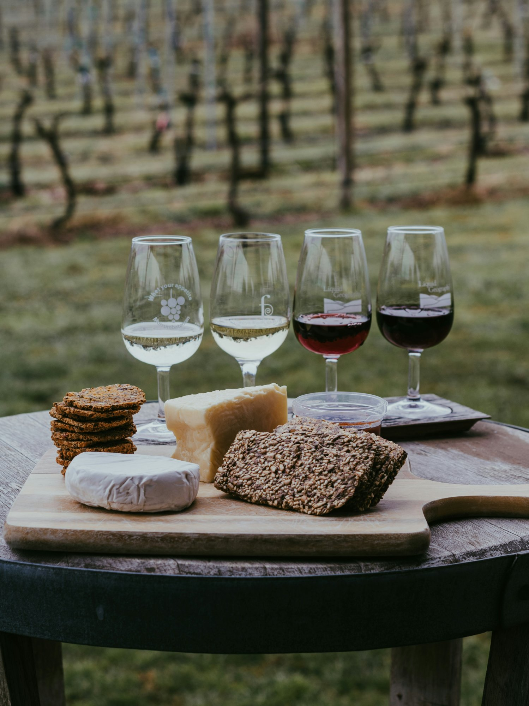
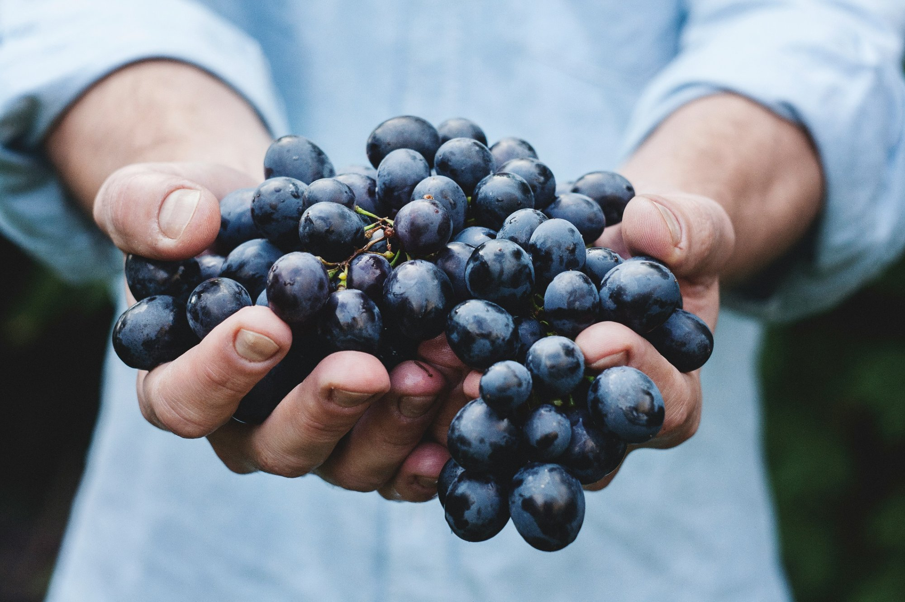
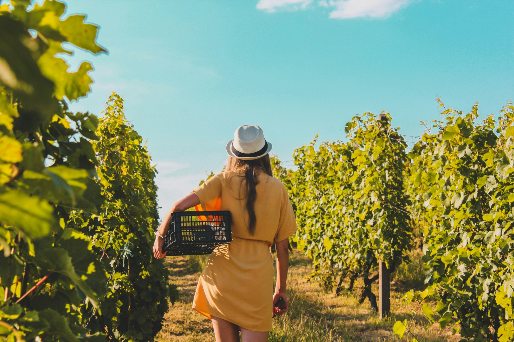

Michigan wine country is full of surprises — but perhaps the greatest is just how stunning the settings can be. Northern Michigan's tasting rooms sit on glacial ridges overlooking Grand Traverse Bay, nestle into wooded hillsides, and in one case, burrow underground into a cave carved from the peninsula itself.
We've visited every tasting room on both peninsulas (it's a tough job) and narrowed it down to five that pair world-class wines with views and atmospheres that rival Napa — without the crowds or the price tags. Here they are, from south to north.
1 Mari Vineyards

Most "scenic tasting rooms" compete on outdoor views. Mari flips the script by going underground. The 31,000-square-foot cellar, carved into Old Mission Peninsula's glacial hills, houses barrel rooms, a production facility, and a cave tasting gallery that feels transplanted from Tuscany.
But step upstairs and the views more than deliver — the hilltop tasting room overlooks East Grand Traverse Bay and the surrounding vineyard blocks. Pair that with Italian varietals that most Michigan winemakers wouldn't attempt (Nebbiolo, Sangiovese, Schioppettino) and you've got a visit unlike anything else in the state.

2 Chateau Chantal

Perched at the highest point on Old Mission Peninsula, Chateau Chantal commands 360-degree views of both East and West Grand Traverse Bay — one of only a handful of points where you can see water on both sides. The European-style chateau doubles as a B&B, making it possible to fall asleep steps from the tasting room and wake up in the vines.
The wine program runs deep: still Rieslings, late-harvest dessert wines, méthode champenoise sparkling, and a reserve program with bottles you won't find on the regular list. The sunset terrace in summer is arguably the single best place to drink wine in Michigan.
"The sunset terrace at Chateau Chantal in July is, without exaggeration, the finest place to drink wine in the entire state of Michigan."
— MV Editorial Team3 Black Star Farms


If "wine country" is a lifestyle, Black Star Farms is living it. Straddling both peninsulas with tasting rooms on Old Mission and in Suttons Bay, this estate winery, creamery, and inn offers the most complete agricultural experience in northern Michigan. The Suttons Bay property is a working farm with horses, gardens, and a distillery alongside the vines.
Winemaker Lee Lutes has earned a national reputation for Pinot Noir, late-harvest Riesling, and a Cab Franc that routinely wins regional competitions. The property's rolling pastoral setting — somewhere between Burgundy and Vermont — is calmer and more intimate than the peninsula's hilltop showstoppers, and that's exactly the point.
4 Brys Estate
From the driveway, the first thing you see is the bay — a sprawling, uninterrupted panorama of East Grand Traverse Bay from what feels like the top of the world. The tasting room is modern and airy, with floor-to-ceiling windows that frame the view like a gallery.
Brys Estate has quietly built one of the peninsula's most consistent wine programs. The Naked Chardonnay (unoaked, crisp, and mineral-driven) is a staff favorite across many TC restaurants. Their Merlot, Cab Franc, and a red blend called Signature Red are all well worth the visit.
Pro Tip: Time Your Visit
Brys Estate gets busy in summer — especially on weekends. Visit mid-week or in the shoulder season (September/October) for shorter waits, more attention from staff, and fall color across the vineyards that you won't believe is real.
5 L. Mawby

If the other wineries on this list are about grandeur, L. Mawby is about charm. This tiny Leelanau Peninsula producer makes one thing: sparkling wine. And they make it brilliantly. The tasting room is tucked into the woods at the end of a gravel road — no grand chateau, no hilltop terrace, just a small porch, good music, and some of the best bubbles in the Midwest.
Larry Mawby pioneered sparkling wine in Michigan in the 1980s, and the winery now operates two labels: L. Mawby (traditional method) and M. Lawrence (more playful, fruit-forward). The whole experience feels like you stumbled onto a secret the locals have kept for decades. Which, frankly, you did.
"L. Mawby proves that the most memorable tasting room isn't always the biggest or the tallest. Sometimes it's the one at the end of a gravel road with a screen door and a bottle of blanc de blancs."
— MV Editorial TeamPlanning Your Route
All five of these tasting rooms can be visited in a long weekend — Mari, Chateau Chantal, and Brys Estate are all on Old Mission Peninsula (M-37 north of Traverse City), while Black Star Farms and L. Mawby are on Leelanau. We'd recommend one peninsula per day with 3–4 stops each.
If you don't want to drive, Traverse City Wine Tours offers guided experiences covering both peninsulas with hotel pickup. Check out our Plan Your Visit page for full itineraries, seasonal tips, and everything you need to map out the trip.